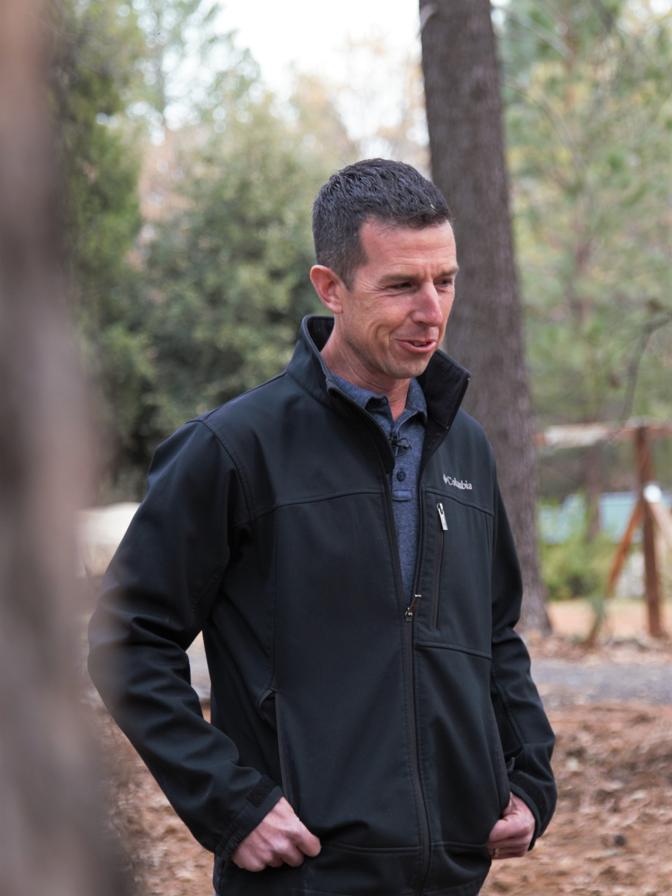
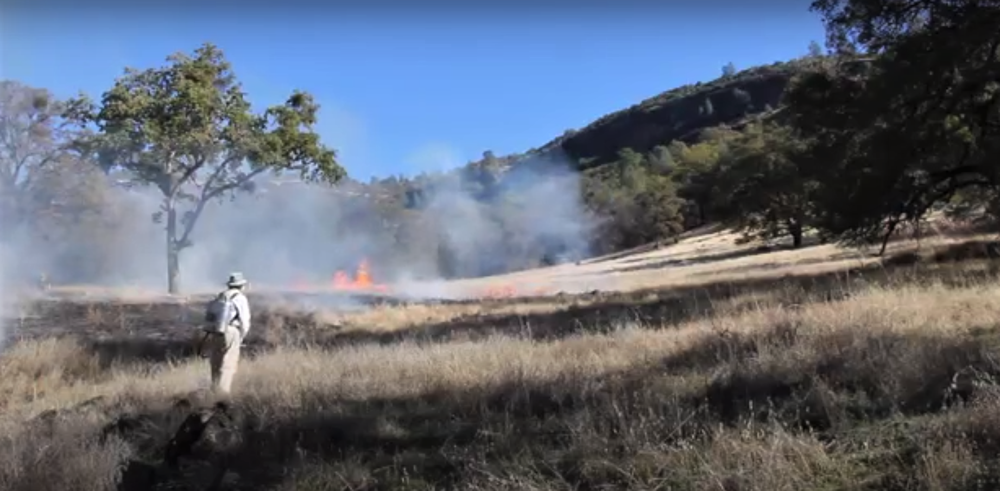
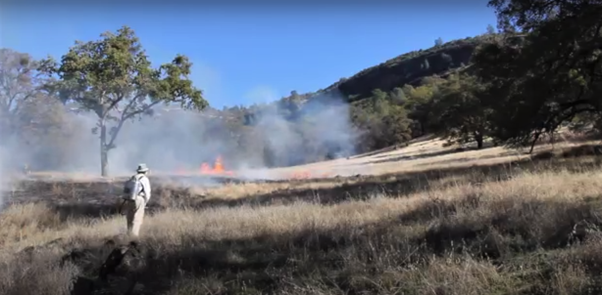

AR portal
Scan the QR code below with the Snapchat application and experience cultural burning in an augmented reality portal.
JOVRNALISM Spring 2020 team produces an immersive documentary about the practice of cultural burning and its differences from other natural and controlled fires.
California State University Chico Professor Don Hankins is an artist, but not
the typical kind. Instead of using traditional brushes or artboards, Hankins uses fire to steward the natural landscape of forests in Big Chico Creek Ecological Preserve and other forests in the world. His art carries a special name:
cultural burning.
“Lighting a fire is kind of like applying a paintbrush to a canvas… and painting a picture with that fire,” Hankins said. “Each stroke of the fire across that canvas creates a blanket of new color that comes back with wildflowers of
certain species for instance.”
According to NASA, 2018 was California’s worst wildfire season to record, and the yearly wildfire count has been increasing since 1980. The National Fire Interagency Center found that there is an average of 72,400 annual wildfires
in the U.S. every year. Wildfires are also growing more dangerous, as the Earth’s temperature is growing hotter and drier, leading to 5.1 million acres of wildfire damage in Alaska in 2015. The National Park Service also analyzed that
85% of all wildfires were man made.
 As wildfires continue to wreak havoc across the state, ecological experts have been looking for better methods of wildfire prevention. Two of the wildfire preventative methods that scientists have researched are prescribed burning
and cultural burning.
Prescribed burning is a government approved procedure where professionals purposely burn regions of forest to prevent over-forestation. Oftentimes, firefighters follow a specific burn plan that identifies specific plants and habitats
that need to be treated with flames. Usually, this process can return nutrients back to soil, get rid of invasive species, and minimize the spread of disease. This process is carried out and approved by fire departments and environmental
agencies such as CALFire.
Cultural burning describes a process where people burn specific parts of a forest to enhance the overall health of the land, wildlife, and native people. Cultural burning involves clearing out potential wildfire hotspots and getting
rid of invasive species. Most importantly, the practice heals the land holistically and encourages all elements within the landscape to thrive. Rather than controlling or taking advantage of the land, cultural burners serve their local
ecosystem and reap the benefits as an exchange. The tradition was developed by indigenous people centuries ago and has been passed down for generations.
Since the Camp Fire of 2018, ecological experts have been looking for better methods of wildfire prevention. One of the methods that they’ve researched is cultural burning. Cultural burning describes a process where people burn specific
parts of a landscape to enhance the overall health of the vegetation, wildlife, and native people.
The practice involves objectives such as clearing out potential wildfire hotspots and getting rid of invasive species. But most importantly, cultural burning heals the land holistically and encourages all elements within the landscape
to thrive. Rather than controlling or taking advantage of the land, cultural burners serve their local ecosystem and reap the benefits as an exchange. The tradition was developed by indigenous people and has been passed down for thousands
of years.
“What's unique about cultural burning is that it is based on people's connection to using fire as a tool,” Hankins said. “It's about supporting the traditional livelihood, caring for land, caring for water, caring for…what we would
call the relations.
Hankins conducting cultural burning at the Big Chico Creek Ecological Reserve Hankins is recognized as one of the most well-known
practitioners of cultural burning. His knowledge of the subject stems from his heritage as a descendant of the indigenous Miwok tribe. Hankins has been performing cultural burnings since 2007 and has advocated for wider spread of these
techniques amongst other ecological preserves.
According to Hankins, the Camp Fire would not have reached an intense scale if there were proper cultural burning procedures in place.
“If the landscapes were attended to and there was no obstruction to indigenous burning, the vegetation communities would have been much more resilient. We wouldn't have had large swaths of land that burned,” Hankins said.
Prescribed burning is a government approved procedure that is similar to cultural burning, where professionals purposely burn regions of forest to prevent over-forestation. However, Hankins says that cultural burning involves spiritual
and ancestral elements of indigenous culture.
“For an agency doing prescribed burning, their burning practices are career driven,” Hankings said “Whereas on the cultural side, it's a lifelong obligation.”
Cultural burning also carries a different meaning for indigenous peoples. Not only does it keep the environment healthy, but its also a method of support for the Natives. There are no specific parameters to the practice, but the idea
is that the tribes maintain balance between their needs and the land’s holistic health.
“In the indigenous context … how we use that fire in landscape is based off of getting very specific species to come back and to manage for those species for various reasons,” Hankins said. “It could be for producing basket plants
or shoots for basketry making. It might be for a very specific medicinal plants to come in or to get certain characteristics out of the fibers of those plants.”
The JOVRNALISM team was able to work closely with Hankins and obtain first-hand footage of cultural burning practices and its requirements.
As wildfires continue to wreak havoc across the state, ecological experts have been looking for better methods of wildfire prevention. Two of the wildfire preventative methods that scientists have researched are prescribed burning
and cultural burning.
Prescribed burning is a government approved procedure where professionals purposely burn regions of forest to prevent over-forestation. Oftentimes, firefighters follow a specific burn plan that identifies specific plants and habitats
that need to be treated with flames. Usually, this process can return nutrients back to soil, get rid of invasive species, and minimize the spread of disease. This process is carried out and approved by fire departments and environmental
agencies such as CALFire.
Cultural burning describes a process where people burn specific parts of a forest to enhance the overall health of the land, wildlife, and native people. Cultural burning involves clearing out potential wildfire hotspots and getting
rid of invasive species. Most importantly, the practice heals the land holistically and encourages all elements within the landscape to thrive. Rather than controlling or taking advantage of the land, cultural burners serve their local
ecosystem and reap the benefits as an exchange. The tradition was developed by indigenous people centuries ago and has been passed down for generations.
Since the Camp Fire of 2018, ecological experts have been looking for better methods of wildfire prevention. One of the methods that they’ve researched is cultural burning. Cultural burning describes a process where people burn specific
parts of a landscape to enhance the overall health of the vegetation, wildlife, and native people.
The practice involves objectives such as clearing out potential wildfire hotspots and getting rid of invasive species. But most importantly, cultural burning heals the land holistically and encourages all elements within the landscape
to thrive. Rather than controlling or taking advantage of the land, cultural burners serve their local ecosystem and reap the benefits as an exchange. The tradition was developed by indigenous people and has been passed down for thousands
of years.
“What's unique about cultural burning is that it is based on people's connection to using fire as a tool,” Hankins said. “It's about supporting the traditional livelihood, caring for land, caring for water, caring for…what we would
call the relations.
Hankins conducting cultural burning at the Big Chico Creek Ecological Reserve Hankins is recognized as one of the most well-known
practitioners of cultural burning. His knowledge of the subject stems from his heritage as a descendant of the indigenous Miwok tribe. Hankins has been performing cultural burnings since 2007 and has advocated for wider spread of these
techniques amongst other ecological preserves.
According to Hankins, the Camp Fire would not have reached an intense scale if there were proper cultural burning procedures in place.
“If the landscapes were attended to and there was no obstruction to indigenous burning, the vegetation communities would have been much more resilient. We wouldn't have had large swaths of land that burned,” Hankins said.
Prescribed burning is a government approved procedure that is similar to cultural burning, where professionals purposely burn regions of forest to prevent over-forestation. However, Hankins says that cultural burning involves spiritual
and ancestral elements of indigenous culture.
“For an agency doing prescribed burning, their burning practices are career driven,” Hankings said “Whereas on the cultural side, it's a lifelong obligation.”
Cultural burning also carries a different meaning for indigenous peoples. Not only does it keep the environment healthy, but its also a method of support for the Natives. There are no specific parameters to the practice, but the idea
is that the tribes maintain balance between their needs and the land’s holistic health.
“In the indigenous context … how we use that fire in landscape is based off of getting very specific species to come back and to manage for those species for various reasons,” Hankins said. “It could be for producing basket plants
or shoots for basketry making. It might be for a very specific medicinal plants to come in or to get certain characteristics out of the fibers of those plants.”
The JOVRNALISM team was able to work closely with Hankins and obtain first-hand footage of cultural burning practices and its requirements.
Scan the QR code below with the Snapchat application and experience cultural burning in an augmented reality portal.